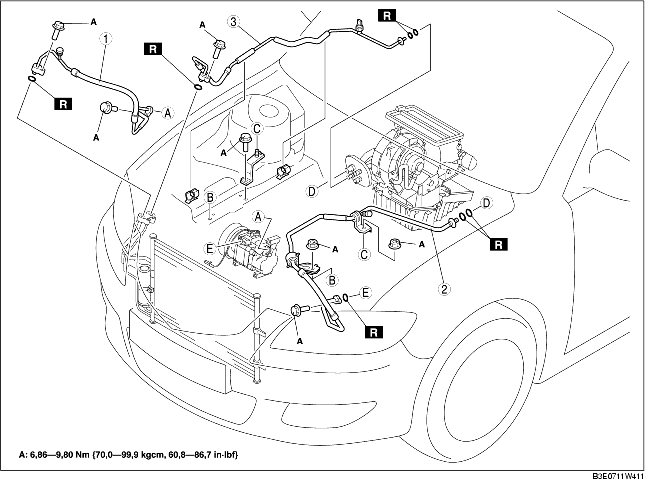

1. Neem de minkabel van de accu los.
2. Tap het koudemiddel af. (Zie HERGEBRUIK KOUDEMIDDEL.) (Zie BIJVULLEN KOUDEMIDDEL.)
3. Verwijder het reservoir van de stuurbekrachtigingsvloeistof.
4. Verwijder het koelvloeistofreservoir. (Zie VERWIJDEREN/PLAATSEN EXPANSIEVAT.)
5. Verwijder de gaskabel.
6. Verwijder de steun van de slang van de stuurbekrachtigingsvloeistof.
7. Verwijder de onderdelen in de aangegeven volgorde, zie de tabel. Mors geen compressorolie.
8. Plaats de onderdelen in omgekeerde volgorde.
9. Controleer de werking van het koelcircuit. (Zie CONTROLE WERKING.)

.
1. Neem de blokaansluiting los door het blok met een tang of iets dergelijks stevig beet te pakken en tegen te houden en vervolgens de aansluitbout of moer te verwijderen.
1. Monteer SST.
2. Kijk door de controle-opening van SST en plaats het uitstekende deel van SST erin totdat dit in aanraking komt met de kooi.
3. Gebruik SST om de mannetjesaansluiting van de leiding of slang los te nemen van de vrouwtjesaansluiting door aan de mannetjesaansluiting te trekken.
1. Breng compressorolie aan op de O-ringen en sluit de koppelingen aan.
2. Draai de koppelingen vast.
1. Draai de bout van de koppeling handvast.
2. Neem de blokaansluiting los door het blok met een tang of iets dergelijks stevig beet te pakken en tegen te houden en vervolgens de aansluitbout of moer vast te draaien.
1. Sluit de mannetjesaansluiting aan door hem met een draaiende beweging op de vrouwtjesaansluiting te schuiven tot de veer over de flens op de vrouwtjesaansluiting ligt.